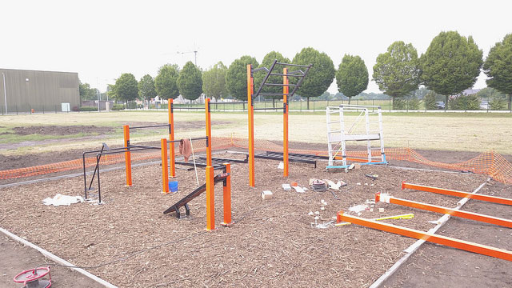

Beachvolleybal wordt gespeeld op een ondergrond van zand, vaak op het strand. Voor grote internationale en nationale toernooien wordt vaak een tijdelijk beachvolleybalstadion gebouwd op bijvoorbeeld een plein in een stad. Het belangrijkste verschil met zaalvolleybal is dat een team maar 2 spelers kent. Er wordt soms ook in teams van 3 of 4 spelers gespeeld, vooral op lager niveau is dit een veel gespeelde vorm.
zijn oefeningen die bestaan uit een verscheidenheid aan grove motorische bewegingen - rennen, staan, grijpen, duwen, enz. - vaak ritmisch uitgevoerd en met minimale uitrusting, dus eigenlijk, lichaamsgewicht oefeningen. Ze zijn bedoeld om de lichaamsterkte, lichaamsfitness en flexibiliteit te vergroten, door bewegingen zoals trekken of duwen, springen of slingeren.
Petanquespelers in Cannes Petanquespelers in Bonifacio Ballen rond de but Petanque is de Provençaalse variant van jeu de boules, hoewel beide termen vaak als synoniemen worden gebruikt. Jeu de boules omvat alle spellen die met metalen ballen worden gespeeld. Voor petanque is weinig of geen uitrusting en infrastructuur nodig; het is eenvoudig van opzet, en de nadruk ligt op behendigheid in plaats van op fysieke kracht.